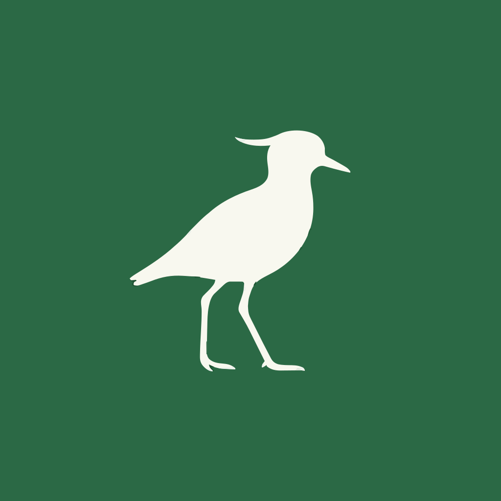

POS TeromindsDesign system de Tero POS. Los tokens no se inventaron: salieron del sitio en producción.
El archivo oficial es tero.svg, el mismo que sirve el sitio. Se usa tal cual: no se recolorea, no se redibuja, no se recorta el ave.
brand.css..wordmark.Verde dominante, arena como único acento cálido. El crema es el fondo por defecto: la marca respira en claro.
--verde-marca--verde-oscuro--arena--cremaInter con tracking muy apretado en titulares (-0.055em). Y una palabra —una sola— en Source Serif 4 itálica. Si se repite, deja de ser un gesto y se vuelve ruido.
La serif itálica marca la palabra que importa. Dos en el mismo slide se anulan entre sí.
Hoy --font-serif declara Source Serif 4 pero no se carga: cae a Georgia. Conviene cargarla para que web y contenido coincidan.
Carrusel 1080×1350. Mismos nombres de clase que el resto de las marcas del repo: cambia la estética, no la API. Se renderizan con engine/renderizar_slides.js.
.slideCrema. El default: la marca respira en claro.
.slide.verdeVerde oscuro. Para precio y momentos de peso.
.slide.marcaVerde del logo. Cierres. El badge va con respaldo.
Frases de dos tiempos, voseo, el precio adelante. Le habla al que abre el local todos los días, no a un área de sistemas.
Decir el precio: $50.000 + IVA por máquina. Y aclarar que el hardware va aparte, en 12 cuotas.
Dar a entender que el equipo está incluido en el abono. Es el error más caro que se puede cometer con esta marca.
El asistente de WhatsApp es para el dueño y su equipo. No es un bot de pedidos para clientes finales.
Si se muestra una pantalla o un número ilustrativo, se aclara. El sitio lo hace en cada bloque.